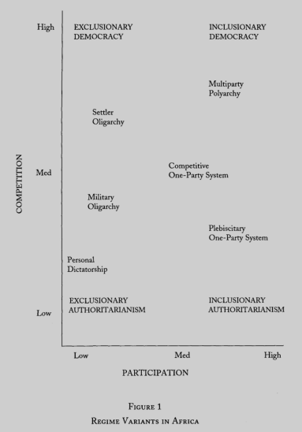
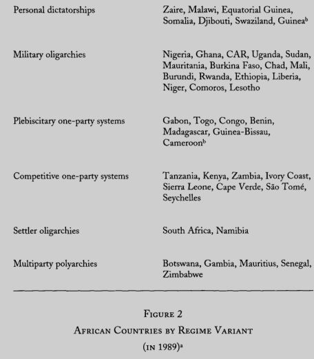

收录于合集
文献来源： Michael Bratton, Nicolas van de Walle, Neopatrimonial Regimes and Political Transitions Africa, World Politics , Vol. 46 , No. 4(July 1994), pp 453-489.
作者简介：
Michael Bratton，密歇根州立大学特聘教授。研究方向包括非洲政治、选举、政治行为、政治制度等。参见：http://polisci.msu.edu/people/michael- bratton/
Nicolas van de Walle，康奈尔大学Maxwell M. Upson讲席教授。研究方向包括非洲政治、比较政治经济学、民主政治等。参见：http://government.cornell.edu/nicolas- van-de-walle
既有的研究往往关注拉丁美洲、东欧、南欧这些官僚威权主义国家的民主转型。然而对于非洲国家的个人化政权则研究的非常少。在非洲，很多国家在各种内外压力之下尝试民主政治的实践，然而非洲国家的民主转型却表现出巨大的差异。那么非洲国家的民主转型为什么会有不同？它们是否有着不同的转型路径？这是本文要解决的主要问题。
一、既有文献
**
**
本文认为民主转型之前的政权结构对于转型过程和结果具有重要影响。然而之前的研究主要侧重于微观的行动者或者宏观的社会经济结构。比如Guillermo O’Donnell和Philippe Schmitter就指出转型的一个重要特征就是“不确定性”，政治事件中关键行动者的理性计算决定了政治结果。Terry Lynn Karl提出了结构偶然性（structured contingency）的路径，即相关的结构制约了行动者的偶然选择，最终的决定是行动者对结构回应的结果。另一些学者则聚焦于宏观的社会经济结构上。比如Nancy Bermeo就指出，威权主义政权在经济繁荣时期更加不容易崩溃。对此作者认为之前的研究要么关注太过狭小的行动者，要么关注过于宏大的社会结构上，因此，作者提出从政权的制度结构分析民主转型的过程。之前的研究由于仅仅关注拉丁美洲、南欧和东欧这些案例，因此他们关注的往往都是官僚威权政权，从而忽视了非洲的新庇护主义政权。
二、什么是新 庇护政权
**
**
所谓新 庇护主义政权（Neopatrimonial Regimes）是指主要统治者通过个人恩惠而不是法治和意识形态进行统治。个人式忠诚和依附关系弥散于整个正式制度和行政体系之中。领导者占有行政体系是为了获取更多的个人财富和地位，而不是为了公共服务。领导者通过掌握国家资源或者职位奖励自己的追随者，而受庇护者则为庇护者提供政治动员上的支持以及支持领导者的决策。
三、新 庇护主义政权转型的一般逻辑
**
**
很多研究认为政治转型往往是统治集团内部分裂的结果。政治转型的启动和结果往往是强硬派精英、温和派精英以及关键的社会行动者相互博弈的结果。在这项研究中作者提出了新 庇护主义政权不同的转型逻辑。具体如下：
1.新庇护主义政权的转型往往来自于自下而上的抗争。新庇护政权下的庇护关系削弱国家的经济绩效。庇护圈子的收益以圈外人的利益为代价。而且这样的政权也没有治理经济的能力。因此，新庇护政权往往引起普通人的反抗。
2. 新庇护主义政权的精英也存在分裂，只不过他们的分裂并不是因为意识形态的原因，而是因为分赃所引起的不满。
3. 新庇护主义政权难以建立政治契约。赢者通吃型的政治斗争削弱了不同团体达成共识的基础。其次新庇护主义政权中的当权派和反对派也难以自身的团结，转瞬即逝的政治联盟使得不管哪个派别要代表他所在的那个政治团体都是极为困难的。
4. 新庇护主义政权下的民主转型难以建立法治。因为执政者的庇护式统治本身与法治相悖，而反对派虽然以法治作为为反抗的托词，但其真正目的是获取当权者的资源。
5. 在新庇护主义政权的民主转型下，中产阶级将与反对派结盟。与拉美等国家的官僚威权主义不同。新庇护主义政权下的政治精英不追求资本积累，而是不断通过庇护关系获取自身利益。因此，在这种情况下企业产权往往得不到有效保护，经济得不到有效发展。因此，中产阶层往往与反对派结盟。
四、新 庇护主义政权的类型学
以上是作者对新庇护主义政权转型逻辑的一般概括。作者认为新庇护主义政权其实也可以分为不同的类型。作者以政权的竞争程度和公民参与程度两个指标对非洲政权进行了划分。具体如下图所示。

在这两个指标下，非洲政权可以分为六种类型，分别是多头政体（Multiparty Polyarchy）、定居者寡头政体（Settler Oligarchy）、军人寡头政体（Military Oligarchy）、竞争性一党制政体（Competitive One-Party System）、国民表决式一党制政体（Plebiscitary One-Party System）、个人独裁政体（Personal Dictatorship）。作者认为多头政体和定居者寡头政体都不属于新庇护主义政权。多头政体不管是在竞争性上，还是在参与程度上都达到了较高的水平，这类政体已经完成了民主转型。定居者寡头政体在参与程度上比较低，因为殖民定居者往往排斥当地人的政治参与，但是这类政权在定居者中间有着较高的竞争性。在殖民者的统治下，这类政权往往有着较高的制度化水平，因此也不属于新庇护主义政权。因此，新庇护主义政权主要是军人寡头、个人独裁、竞争性一党制、国民表决式一党制四种类型。非洲国家在当时的政权类型分布如下图所示。

五、结构+过程：新 庇护主义政权转型的不同逻辑
**
**
个人独裁政体是新 庇护主义政权的典型。这种类型的政权排斥政治参与，所谓的参与仅仅是名义上的，并不能起到约束独裁者的作用。政治竞争被高度控制，反对者是被打击的对象，并且独裁者的统治没有时限。个人独裁式政权对于民主转型带来很多不利影响。首先权力的个人化使得统治者不愿意放弃权力，因此转型的过程只能由国家外的力量或者国际因素所推动。在个人独裁式政权，这样的转型势必不会一帆风顺。此外，独裁者的利益以及与国家的制度紧密纠缠在一起，独裁者认为既存的政权与其自己的生死存亡是紧密相关的，因此极力排斥民主转型。就算在国内外压力下，独裁者不得不进行民主政治的尝试，独裁者也会采取各种手段破坏正常的民主实践。因此这就不难理解独裁式政权的民主转型显得格外曲折和动荡。第三，独裁式政权没有建立完善的政治竞争的制度基础，因此各方难以达成关于法治和权力分享的共识。社会组织的碎片化和脆弱性又使得社会层面的抗争难以撼动既有的政权。因此个人独裁式政权难以实现稳固的民主政治。
国民表决式一党制政权相比于个人独裁式政权有着更好的参与性。在国民表决式一党制政权，政治仪式往往被用来换取国民、政府官员对于政权的认同。选民被广泛动员并且通过政党得到有效控制。选民的参与率以及赞成票都达到百分之九十以上。但是在这样的政权内，政治竞争是虚假的或者说是很不充分的。反对党受到严格的限制。在国民表决式一党制政权有较高的政治参与，但是政治竞争受到限制。国民大会成为政权获取合法性的重要制度工具。在国民表决式一党制政权下，国民大会成为民主转型的重要场域。在这里，不管是当权派和反对派都接受把国民大会作为自己的表达通道。对于反对派而言，现有的政权是如此强大而且政治游戏的规则又很大程度上倾向于执政者，因此反对派只有利用现有的渠道以求慢慢修改政治规则。此外，参与式的制度结构是如此强大以致执政者不得不考虑国民大会的要求，因此，国民大会对反对者而言是一个很好的可以利用的工具。对于当权者而言，国民大会是其获取合法性的政治工具。然而，这样的冲突终究会爆发。关键节点就在国民大会寻求自己主权的时候。这时候当权者往往会反对威胁自身权力的政治变迁。不过这种政治转型的结果并不好预测，因为这取决于他们的相对力量。比如喀麦隆总统比亚（Paul Biya）和多哥总统埃亚德玛（Gnassingbe Eyadema）就成功限制了国民大会的影响；而贝宁总统马蒂厄·克雷库(Mathieu Kerekou)和刚果共和国总统萨苏(Denis Sassou Nguesso)则屈服了。
军人寡头政权是一种具有很强排他性的政体类型。这种政权排斥真正的政治竞争和政治参与，政策决定出自于一群包括军人在内的精英群体。一定程度的客观标准得到保持，军人和文官有一定程度的专业化。军人寡头政权有时会诉诸民粹主义的意识形态手段，但是这种民粹主义式的政治动员并不是真正意义上的政治动员。军人寡头政权并不相信文人政权，但是其本身却难以发展出有效的组织基础以获得底层民众的支持。军人寡头政权的武力偏好、脆弱的合法性基础，加上其缺乏治理能力使得军人寡头政权面临很大的转型压力。然而，军人寡头政权下的民主转型受到原有军官团的很大控制。尽管军官团并不一定完全控制政府事务，但是军人寡头们一定是统治联盟中最有影响力的行动者。为了保持一定的权力，军官团会在民主转型时设置保留区域，以便控制民主政治的转型。军人团体往往视自己为最为理性的群体，因此当民主政治无法正常运转时，军人们便会干预政治。另外，由于之前对社会组织和政党的压制，缺少有组织的政权替代者，这使得建立稳固的民主政治秩序极为困难。而这又为军官团干预政治提供了一个很好的理由。
竞争性一党制政权比起国民表决式一党制更加具有包容性，也更有竞争性。在竞争性一党制政权，选举能够容纳两个或者更多的候选人，选民有更多的选择权利，尽管也受到一定的限制。这样的政权有着更高的稳定性，也没有军人干预的问题。在竞争性一党制政权，执政者的地位比较稳固，能够获得制度化的政治支持。执政者的优势地位使其不惧怕反对党的挑战，因此他们能够容纳一定程度的政治多元性。但是当经济危机削弱政权的绩效合法性以及政权内部的改革削弱政权的执政资源时，其也不得不面临政治转型的问题。当然，相比于其它的政权类型，竞争性一党制政权的转型前景比较光明。之前就存在的政治参与和政治竞争的制度基础为民主转型时不同政治团体达成共识提供了条件。反对党认为自己足够强大，它们相信在现有的制度安排下能够在新的选举中获得胜利。它们所需要的仅仅是在规则上作出很微小的修正，以使得选举更加公平。同样，执政者也对他们的执政基础和合法性足够自信，他们认为他们具有很好的组织优势，因此能够在新的选举中获得胜利。因此，在竞争性一党制政权下，民主转型将更加顺利。因为他们都足够自信，所以对于选举规则有着较高的认同，就算哪一方在选举中失利，他也会相信在下一轮选举中能够取胜。
六、结语
**
**
这项研究的主要贡献在于：第一，挑战了从微观行动者和宏观社会经济结构视角研究民主转型的传统，而是重点研究不同政体的政治制度结构（主要是参与程度和竞争性）及其对民主转型的影响。第二，对不同政体民主转型的过程进行测量是比较新颖的。这项研究所要解释的因变量既不是民主转型如何发生，也不是民主转型的一个偶然结果，而是不同的结构塑造了不同的转型过程。第三，这项研究以非洲国家的民主转型为样本，提出的新 庇护主义政权值得重视。
编后语：
**
**
小编认为这项研究从研究路径上给人很大的启迪。“结构+过程”的研究路径为我们发现民主转型的奥秘提供了另一扇门。民主转型虽然难免受到行动者偶然性行动的影响，但是行动者的行动是在政权结构的制约下做出的。因此，在某种意义上，行动者行动的偶然结果也是民主转型过程的一个部分。此外，这篇文章也存在一些问题。作者花了很大的篇幅论述个人化以及非制度化的新 庇护主义政权，但是在后面分类时将竞争性一党制、军人寡头、国民表决式一党制也列为新庇护主义政权的类型。但是正如他在文章中所讲，其他类型的政权在制度上有这不同的表现，起码他们都比个人独裁式政权好。比如竞争性一党制政权就有比较好的制度基础，而军人寡头政权的统治比起个人独裁式政权也更加具有专业化和客观性的特征。那么这些非个人独裁式政权还能列入新庇护主义政权的庇护吗？因此，这也是小编编译时的困惑之处。此外，作者将非洲的定居者移民政体列为民主政体，将竞争性一党制政权列为非民主政体，这种标准的设定也值得仔细推敲。